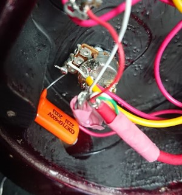

2021年度のまとめ（2022/03/31）
助教の4年目が終わりました．
新型肺炎による未曾有の危機どころではないあれやこれやが世を騒がせている今日このごろ，みなさまいかがお過ごしでしょうか．
今年も形式的に1年間のまとめなどを書き連ねておきます．
研究業績 （2021/04～2022/03 のもの）
WISS2021でデモ発表（筆頭）
CHI2022のLBWに採択（共著）
WISS2021で発表した論文（3Dプリントした毛を用いた触覚ディスプレイ）では，対話発表賞を頂戴いたしました．感謝します．
PC委員の推薦で選出される賞です．
久しぶりの現地開催の学会で準備や設営などが少しばかり大変でしたが，
やはり作ったものを触って体験していただけるのはファブリケーション研究の強いところです．
投稿中の論文としてCHI2022で発表予定のLBWが1件あります（共著）．
いつもお世話になっているTexas A&M（HCIED Lab）のJeeeun Kim先生とその研究室の学生さんらによるもので，
UIST2020のProgrammable filamentを発展させていただいた研究です．
複数の材料をつなぎ合わせることで材料の混合比を変化させ，造形物の性質を変更できないか，といったプロジェクトです．
僕はシステムの実装やほんのちょっとのコメントをしています．
また，新しいネタで論文を1本執筆中です．
締切が来週に迫って呻いています（毎年この時期はこうなります）．
なお，昨年に転がりまわりながら執筆した論文は不採択でした．
そういうわけで，来年度も引き続き研究活動に励んで参ります．
雑記
日々いろいろなことをやっているのですが，ほぼやった時点で満足してしまって発信できていないです．その一部を吐き出しておきます．

ギターをよく練習した
引きこもり生活を余儀なくされておりましたが，おかげでかなりギターの練習がはかどりました．いずれ動画にでも撮ってみようかと思っていますが，1年前よりかなり指が動くようになりました．画像はギターのトーンポット（のコンデンサ）を改良してみたの図．トーンを意識した演奏なんてしませんが，ノイズとか減るのかなぁと思って付け替えてみた次第です．違いはわかりません．練習．
お！
来年度も頑張らずに済むように頑張ります．以上．